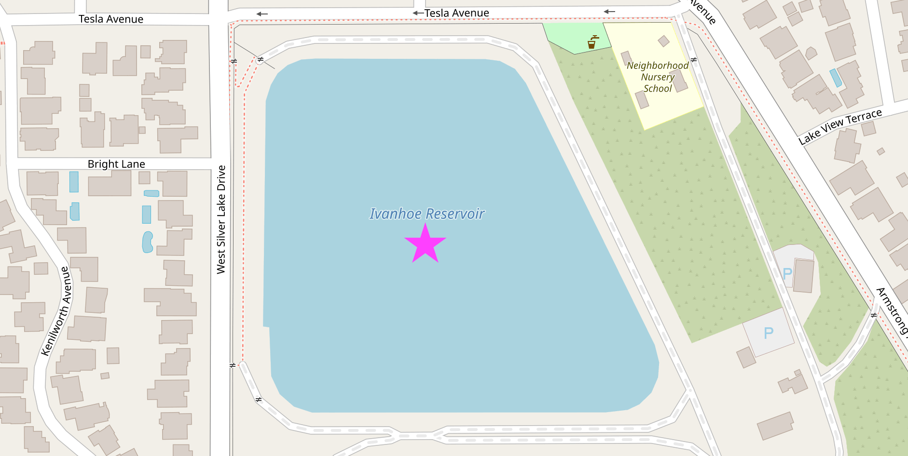
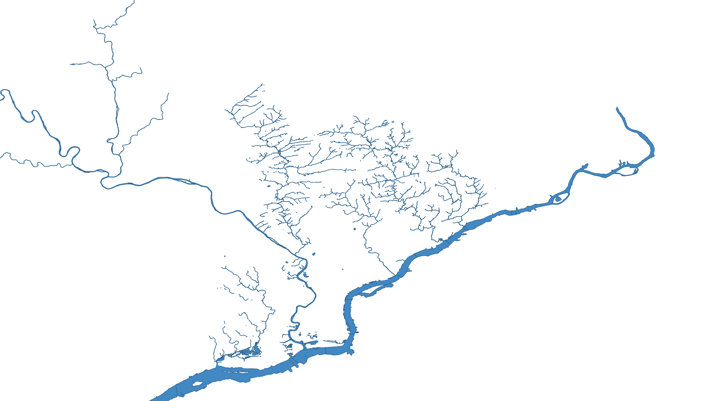
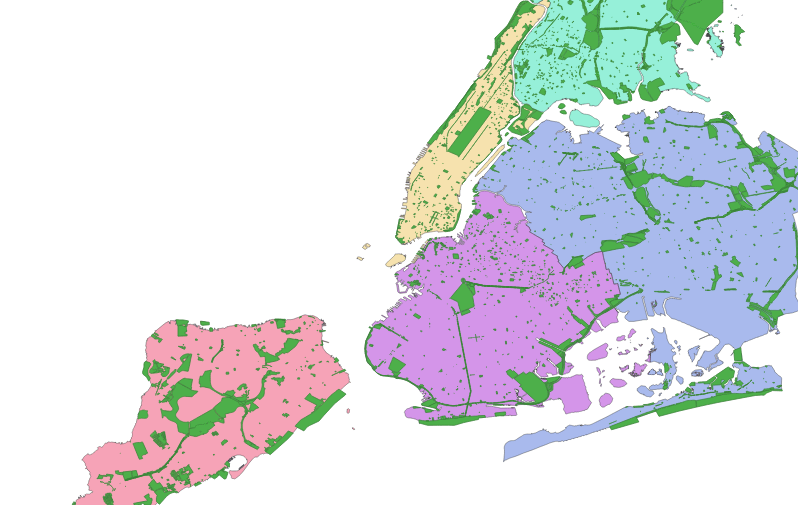
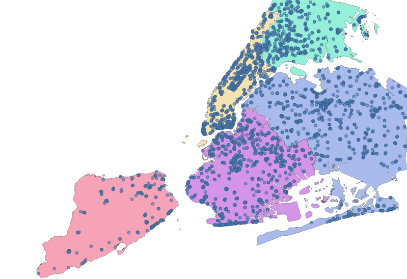
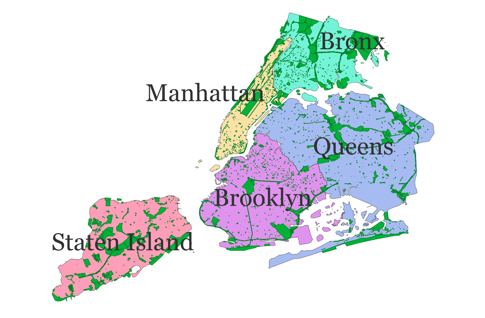

Geospatial: Rust the Process
Luke Skywalker once said that space is the final frontier, like it’s just some distant concept far, far away. Set your lightsaber to stun just for a second though, and you quickly realize that space is vast and ever-present — it’s all around us and between everything everywhere. It’s familiar, yet elusive. How big is it? What should we do with it? Are we there yet?
What Is Geospatial Computation?
If a computer is answering questions about maps, congratulations! That’s geospatial computation.
OK, maybe that’s an oversimplification — but it’s not so far off.
Unlike a lot of abstract things that happen with computers (e.g. seeing “#nofilter” on a sepia-toned photo of someone with cartoon cat ears), the results of geospatial work can be tied back to the real world. Transportation planners use precise measurements to start building new roads to make traffic better in the future, while present-day commuters use map apps to navigate around the absolute chaos those planners have caused. Climate scientists measure rising ocean levels, while Florida real-estate agents measure the availability of brand-new oceanfront condos. Hikers at home dream about getting lost in the wilderness, while hikers lost in the wilderness dream about finding a way home.
No matter what your agenda is, information is power, and all kinds of people are using geospatial techniques to go places. It can be an exciting field indeed.
Why Rust?
Nobody likes to be lost for long; Rust is extremely fast. For millennia, maps have acted as a form of shared memory to safely access stored locations; Rust can help you ensure that shared map locations stored in memory are also accessed safely. People really love discovering new places; people also really love Rust.
Whether you are interested in Rust for its performance or security, integrating geospatial data with Rust is a natural combination.
Who Is This Book For?
If you’re new to the geospatial field, welcome aboard! The examples that follow are not intended to be a comprehensive introduction to the field of geospatial analysis, but all of them were designed to be approachable by anyone with an interest in learning more. There should be just enough context for you to get your bearings, but feel free to explore some side quests before coming back to the main story.
If you’ve previously done some geospatial analysis in another environment but are new to the Rust programming language, hello neighbor! Feel free to jump around or skip ahead to the well-labeled examples, which give real solutions to practical problems.
In any case, the path of your life has led you here: the right place to get started. This set of examples will help you navigate familiar geospatial problems using a powerful programming language that may not quite be familiar to you yet.
So feel free to install Rust; make yourself a latte (with or without Java); pick any topic on the left; and follow the Coordinate Reference System of your own heart as we dive headfirst into common geospatial questions and learn how to use computers to efficiently find the answers. üññü§ñ
You’re Projecting
Just like any good argument, the best way to start spatial analysis is by projecting your points.
Speaking of good arguments, almost everyone agrees at this point that the earth is a three-dimensional (and slightly smooshed) sphere. However, many spatial algorithms operate under the rustic assumptions of two-dimensional euclidean geometry. When your input is defined in terms of latitude and longitude, the first step is to flatten (or “project”) it onto 2D space.
In-depth Perception
There are lots of ways to flatten a 3D thing into a 2D space, but this process inherently introduces some distortion (like an orange getting smashed in your backpack). Choosing the best possible “projection” for a given scenario is part of the art of being a geospatial analyst.


For applications spanning the globe, the mercator projection is a common projection that minimizes distortion for most of the inhabited planet. However, if you’re focused on relative distance from a particular point, a gnomonic projection might be a better choice.
If your work is more local in nature, you can use a projection method that is finely tuned for high accuracy within a relatively small and specific geographic area like Zone 5 in Southern California, but if you try to use that same projection for something in New York (or, alas and alack, old York) your results will be way off!
Everything about this would be easier if the flat-earthers were right, but fortunately there are several well-rounded tools for our mostly-round earth.
Co-Dependency
Our first group project(ion) will require some new dependencies.
The PROJ coordinate transformation software has been helping people solve geospatial problems since the late 1970’s. In addition to its longevity, it also stands out for its accuracy and speed. The proj crate wraps and extends PROJ to make it feel right at home in your Rust application.
For its part, well-known text (WKT) is a very (sigh) well-known way of representing geometry as text, and the wkt crate adds read and write support for WKT to Rust.
Finally, we’ll be using the geo crate (a collection of geometry types and algorithms) to do some analysis.
Let’s add these dependencies to our Cargo.toml file and get started:
[dependencies]
geo = "0.21.0"
proj = "0.27.0"
wkt = "0.10.3"
OK, now let’s look for a body of water and dive right in.

This is the Ivanhoe reservoir in Los Angeles. Named after Sir Walter Scott’s Ivanhoe, a stirring tale of romance and chivalry first published in 1819…
Just Get to the Point
OK OK OK. We can use the wkt crate to create a geo geometry from the text representation of this point in the center of the water.
use geo::Point;
use wkt::TryFromWkt;
let wkt_string = "POINT(-118.265429 34.103175)";
let mut point: Point = Point::try_from_wkt_str(wkt_string).unwrap();
assert_eq!(point.x(), -118.265429);
assert_eq!(point.y(), 34.103175);
Personality Traits
Let’s focus on this bit of code from the example above: Point::try_from_wkt_str.
The Point type, from the geo crate, calls the try_from_wkt_str method, from the wkt crate. Depending on your personality and background, this kind of cross-library interaction may feel either completely horrifying or utterly unremarkable. Many languages, like C++ or Java, don’t really support adding methods to existing types like this, but more dynamic languages, like Ruby or Python, let you easily do all kinds of fun things like replacing or adding methods at runtime.
However, ultimately you reap what you sow. Unintentionally clobbering some existing method definition that was defined in a third-party module can quickly make “fun things” feel decidedly less fun. For that reason, even when they are supported, people often try to avoid these kinds of language gymnastics.
Rust tries to take an enlightened middle ground with its trait system. Rust supports adding shared functionality to existing types, but only in some carefully prescribed ways which avoid many of the problems with less-restrictive approaches. Rust’s trait system is a core component of the language, and you can (and should!) read more about it in the official documentation.
The main takeaway for now is this: In Rust, functionality is often defined in terms of traits and in order to be effective you’ll need to use both the traits and the types which implement those traits (in this case use wkt::TryFromWkt and use geo::Point respectively).
Trait-or
Another useful trait is the Transform trait, provided by the proj crate, which can be used to project geometries into a different coordinate reference system.
Let’s betray latitude and longitude, technically known as The World Geodetic System, and transform our point in the center of the Ivanhoe reservoir to the California State Plane Coordinate System.
use geo::Point;
use wkt::TryFromWkt;
let wkt_string = "POINT(-118.265429 34.103175)";
let mut point: Point = Point::try_from_wkt_str(wkt_string).unwrap();
use proj::Transform;
// Transform from WGS84 to EPSG:6423
// https://epsg.io/6423 - California zone 5 (meters)
point.transform_crs_to_crs("WGS84", "EPSG:6423").unwrap();
assert_eq!(point.x(), 1975508.4666086377);
assert_eq!(point.y(), 566939.9943794473);
If we want to export or share our results, the wkt crate can serialize a point’s in-memory representation back to well-known text.
use geo::Point;
use wkt::TryFromWkt;
let wkt_string = "POINT(-118.265429 34.103175)";
let mut point: Point = Point::try_from_wkt_str(wkt_string).unwrap();
use proj::Transform;
// Transform from WGS84 to EPSG:6423
// https://epsg.io/6423 - California zone 5 (meters)
point.transform_crs_to_crs("WGS84", "EPSG:6423").unwrap();
use wkt::ToWkt;
let wkt_output = point.wkt_string();
assert_eq!(wkt_output, "POINT(1975508.4666086377 566939.9943794473)");
Connect the Dots
Projecting a single point is simple enough. Let’s try something a little more interesting.

People often say that the best way to learn is by making a mistake, so follow along as we do exactly that when calculating the area of this reservoir.
use geo::Polygon;
use wkt::TryFromWkt;
use geo::algorithm::area::Area;
let wkt_polygon = "POLYGON((-118.2662232 34.1038592,-118.2662339 34.1023485,-118.2639303 34.1023235,-118.2649125 34.1038878))";
let mut polygon: Polygon = Polygon::try_from_wkt_str(wkt_polygon).unwrap();
// ü§î That's a suspiciously small number for so much water.
assert_eq!(polygon.unsigned_area(), 0.000002779367475015937);
Ivanhoe reservoir is large enough to hold over 400,000 shade balls, so any area measurement that begins with 0.00000... is highly suspect. Because our polygon was described in degrees (unprojected coordinates), the units of area we just computed are in “square degrees” which is not a very useful measurement. A degree near the North Pole is very different from a degree near the equator (and not just in terms of temperature).
To get a reasonable result, we should first project the polygon to a euclidean coordinate reference system that is suitable for Los Angeles.
use geo::Polygon;
use wkt::TryFromWkt;
use geo::algorithm::area::Area;
let wkt_polygon = "POLYGON((-118.2662232 34.1038592,-118.2662339 34.1023485,-118.2639303 34.1023235,-118.2649125 34.1038878))";
let mut polygon: Polygon = Polygon::try_from_wkt_str(wkt_polygon).unwrap();
use proj::Transform;
// Transform from WGS84 to EPSG:6423
// https://epsg.io/6423 - California zone 5 (meters)
polygon.transform_crs_to_crs("WGS84", "EPSG:6423").unwrap();
// Now we can get a useful "square meters" measurement.
assert_eq!(polygon.unsigned_area().round(), 28447.0);
Notice that we can transform this polygon the same way we previously transformed a single point. Now we know that approximately 28.4k square meters are required to hold 400k floating spheres in one small spot on the floating (slightly smooshed) sphere we call home, and we’ve solved a story problem that we were never even asked.
Working with What You’ve Got
That’s a quick look at some of the basics of working with geometry in Rust. Next, we’ll take a look at how to use file formats like CSV and GeoJSON that support features to go beyond just the shape of things.
Feature Creek
In the previous chapter we worked with geometry stored in Well Known Text (WKT) format. It should come as no surprise that solving geospatial problems fundamentally involves geometry, but it’s rarely exclusively about geometry. Usually there are other attributes associated with that geometry that we also want to explore. This combination of a geometry with its associated attribute data is often referred to as a feature, and a group of features can be called a feature collection.

In addition to being the “City of Brotherly Love,” Philadelphia is also a city of water. We can describe shapes using Well Known Text, and all these waterways can be represented as a long list of WKT declarations:
MULTIPOLYGON(....)MULTIPOLYGON(....)MULTIPOLYGON(....)- …
Cry Me a River(s)
You can say “I’m going for a walk down by the river” if you live in a one-river town, but in Philadelphia you need to be a little more specific. Let’s associate a name with each of these shapes to clarify which river we’re talking about.
| creek_name | geometry |
|---|---|
| Wissahickon Creek | MULTIPOLYGON(….) |
| Schuylkill River | MULTIPOLYGON(….) |
| Delaware River | MULTIPOLYGON(….) |

Now we’re talking specifics! The Delaware River defines Philadelphia’s eastern boundary, and the Schuylkill River runs through the city from the North West. Even though it’s not in very many spellcheck dictionaries, the Wissahickon is still a local favorite for urban walkers, so let’s amble over to the Wissahickon Valley Park.
Bridging the Gap

Walking near water is neat, and walking on water is an advanced topic for another book, but walking over water? Now that’s an infrastructural thrill within reach! So how do we find which segments of the Wissahickon have a bridge? Combining a geometry with other associated data into a feature allows us to solve these kinds of problems.
There are a lot of ways we can represent geospatial information. Recall that well-known text (WKT) is only concerned with representing a shape — it can’t store whether that shape represents a bridge or has a name. One approach is to embed WKT into another more flexible format such as a CSV file, with one column containing WKT to describe the shape of the feature, and each additional column including another attribute, such as the name of the waterway or whether the segment has a bridge.

This CSV of Philadelphia waterway segments does just that. Here’s an excerpt:
| creek_name | inf1 | geometry |
|---|---|---|
| Cobbs Creek | MULTIPOLYGON(….) | |
| Cobbs Creek | Bridged | MULTIPOLYGON(….) |
| Wise’s Mill | MULTIPOLYGON(….) | |
| Wissahickon Creek | Bridged | MULTIPOLYGON(….) |
| Wissahickon Creek | MULTIPOLYGON(….) | |
| Wissahickon Creek | Bridged | MULTIPOLYGON(….) |
You’ll notice that a single creek is broken into many small segments in this data set. A “Bridged” segment indicates precisely where that bridge exists on the waterway (highlighted yellow in the image above).
The Short List (A-bridged)
To make a handout for our “First Annual Wissahickon Walkabout,” we want to include a list of bridges where participants can cross the Wissahickon. Some of these bridges are quite lovely, providing tourists an ideal location for selfies, while fly fishers cast shade while casting in the shade below.
Let’s combine a little attribute inspection with a little geometric processing to find the best bridges for our walk:
use csv;
use geo::algorithm::{Centroid, Area};
use geo::geometry::{Point, Geometry};
use proj::Transform;
use wkt;
let mut feature_reader = {
use std::fs::File;
let file = File::open("src/data/philly_waterways/philly_waterways.csv").expect("file path must be valid");
csv::Reader::from_reader(file)
};
let mut acceptable_walkabout_bridges: Vec<Point> = vec![];
for row in feature_reader.records() {
let creek_segment = row.expect("must be able to read row from CSV");
let creek_name = creek_segment.get(0).expect("'creek_name' field must be present");
let infrastructure_label = creek_segment.get(1).expect("'inf1' field must be present");
let geometry_str = creek_segment.get(2).expect("`geometry` field must be present");
// We're only interested in Bridged segments.
if infrastructure_label != "Bridged" {
continue;
}
// We're only interested in bridges that cross Wissahickon Creek.
if creek_name != "Wissahickon Creek" {
continue;
}
// Ok, we've utilized some attributes to narrow our search,
// now let's dig deeper with some geometric analysis.
use wkt::TryFromWkt;
let geometry = Geometry::try_from_wkt_str(geometry_str).expect("wkt must be valid");
let bridge_centroid = geometry.centroid().expect("a centroid should exist for any non-empty geometry");
// We're only interested in the part of the Wissahickon Creek that's within
// the Wissahickon Valley Park.
let SOUTHERN_PARK_BORDER = 40.013214;
let NORTHERN_PARK_BORDER = 40.084306;
if bridge_centroid.y() < SOUTHERN_PARK_BORDER || bridge_centroid.y() > NORTHERN_PARK_BORDER {
continue;
}
// Compute the size of the bridge
let bridge_area = {
// In the previous article about projections, we learned how to transform lat/lon to a local
// projection to get useful area calculations.
//
// WGS84 - World Geodetic System, aka lat/lon
// EPSG:3364 - NAD83(HARN) / Pennsylvania South (meters)
let geometry_in_meters = geometry.transformed_crs_to_crs("WGS84", "EPSG:3364").expect("valid transformation");
geometry_in_meters.unsigned_area()
};
// We're not intested in walking across large automobile bridges.
if bridge_area > 250.0 {
continue;
}
// Using attribute data and geometric processing, we've identified a good walking bridge!
acceptable_walkabout_bridges.push(bridge_centroid);
}
assert_eq!(acceptable_walkabout_bridges.len(), 8);
approx::assert_relative_eq!(acceptable_walkabout_bridges[3], Point::new(-75.22563703858332, 40.071892693259315));
Eight bridges seems like the perfect number of crossings for an enthusiastic walk about the Wissahickon. These bridges run the gamut, including wee pedestrian crossings, quick bicycle connectors, and a couple not-too-huge bridges shared with cars. One of the most interesting bridges we’ll encounter (near 40.07189°N, 75.22563°W) is the historic Thomas Mill Covered Bridge. Built in 1855 and fixed up by the Works Progress Administration in 1939, it’s the oldest covered bridge in any major US City.

Just like the Thomas Mill bridge probably felt in 1938, our code could benefit from a good deal of tender loving care. One thing you may have noticed is the repetitive nature of getting numbered fields from the CSV and then expecting no errors:
let creek_name = creek_segment.get(0).expect("'creek_name' field must be present");
let infrastructure_label = creek_segment.get(1).expect("'inf1' field must be present");
let geometry_str = creek_segment.get(2).expect("`geometry` field must be present");
For each row in the CSV, getting fields by number in an ad-hoc fashion like this is simple, but it’s a little loosey-goosey: We have to remember what order the fields are in and also write some boring error-checking boilerplate.
A Structured Alternative
Instead, we can parse each row into a rigidly defined struct. Let’s take another look at our data:
| creek_name | inf1 | geometry |
|---|---|---|
| Wissahickon Creek | Bridged | MULTIPOLYGON(….) |
This schema can be converted into a Rust struct like this:
struct CreekSegment {
creek_name: String,
inf1: String,
geometry: geo::geometry::Geometry
}
Structs in rust
A struct is a type that holds multiple related values. You can read more in The Rust Book.
Notice how each field of the CreekSegment struct corresponds to a column in our CSV input. From here, we could write boilerplate code to populate each of these fields:
let creek_name = creek_segment.get(0).expect("'creek_name' field must be present");
let infrastructure_label = creek_segment.get(1).expect("'inf1' field must be present");
let geometry_str = creek_segment.get(2).expect("`geometry` field must be present");
let geometry = Geometry::try_from_wkt_str(geometry_str).expect("wkt must be valid");
let creek_segment = CreekSegment {
creek_name,
inf1: infrastructure_label,
geometry
};
Deserializing information from a CSV file into a more ergonomic form like this isn’t exactly cutting-edge stuff in the world of Computer Science — actually it’s kind of tedious and error prone. Fortunately for us, we can stand on the shoulders of giants and turn to the wisdom of those who’ve deserialized before.
Serde, Slayer of Boilerplate
The excellent serde crate is a framework for serializing and deserializing data across a variety of formats. We can use serde to annotate the above struct declaration, then build these structs from a CSV without all the verbose error checking and field assignment code.
#[derive(serde::Deserialize)]
struct CreekSegment {
creek_name: String,
// serde offers some customizations so that we can use sensible
// names in our code without having to modify our source data, whose
// names we might not control.
#[serde(rename = "inf1" )]
infrastructure_label: String,
// serde has built-in support for common data types like numbers and strings,
// and it also allows other crates (like `wkt`) to build custom deserializers
// so that we can create complex data types (like this `Geometry`)
// directly from our input data.
#[serde(deserialize_with = "wkt::deserialize_wkt")]
geometry: geo::geometry::Geometry
}
Attributes in Rust
In the above Rust code, the #[...] bits are called attributes. The official Rust documentation on attributes is a little long in the tooth, but that’s because attributes are really powerful and can be used for a lot of different things. At the risk of oversimplifying, attributes are just a way to give pieces of code extra behavior. In this case, by annotating our struct with #[derive(serde::Deserialize)], we give our struct the ability to be built from a .csv file or other serde data sources. We then tweak the way that serde will build our struct with the serde-specific #[serde(...)] attributes.
Keeping It Tidy
Finally, before we return to our example, a struct like this is also the perfect place to hang some little helper methods:
#[derive(serde::Deserialize)]
struct CreekSegment {
creek_name: String,
#[serde(rename = "inf1" )]
infrastructure_label: String,
#[serde(deserialize_with = "wkt::deserialize_wkt")]
geometry: geo::geometry::Geometry
}
impl CreekSegment {
fn is_bridge(&self) -> bool {
self.infrastructure_label == "Bridged"
}
fn centroid(&self) -> geo::Point {
use geo::algorithm::Centroid;
self.geometry.centroid().expect("a centroid exists for any non-empty geometry")
}
fn is_acceptable_size(&self) -> bool {
// We're not intested in walking across large automobile bridges.
self.square_meters() < 250.0
}
fn square_meters(&self) -> f64 {
use geo::algorithm::Area;
use proj::Transform;
// In the previous article about projections, we learned how to transform lat/lon to a local
// projection to get useful area calculations.
//
// WGS84 - World Geodetic System, aka lat/lon
// EPSG:3364 - NAD83(HARN) / Pennsylvania South (meters)
let geometry_in_meters = self.geometry.transformed_crs_to_crs("WGS84", "EPSG:3364").expect("valid transformation");
geometry_in_meters.unsigned_area()
}
}
Let’s see how we can use the above code to clean up our earlier implementation:
use csv;
use geo::algorithm::Area;
use geo::geometry::{Point, Geometry};
use wkt;
#[derive(serde::Deserialize)]
struct CreekSegment {
creek_name: String,
#[serde(rename = "inf1" )]
infrastructure_label: String,
#[serde(deserialize_with = "wkt::deserialize_wkt")]
geometry: geo::geometry::Geometry
}
impl CreekSegment {
fn is_bridge(&self) -> bool {
self.infrastructure_label == "Bridged"
}
fn centroid(&self) -> geo::Point {
use geo::algorithm::Centroid;
self.geometry.centroid().expect("a centroid exists for any non-empty geometry")
}
fn is_acceptable_size(&self) -> bool {
// We're not intested in walking across large automobile bridges.
self.square_meters() < 250.0
}
fn square_meters(&self) -> f64 {
use geo::algorithm::Area;
use proj::Transform;
// In the previous article about projections, we learned how to transform lat/lon to a local
// projection to get useful area calculations.
//
// WGS84 - World Geodetic System, aka lat/lon
// EPSG:3364 - NAD83(HARN) / Pennsylvania South (meters)
let geometry_in_meters = self.geometry.transformed_crs_to_crs("WGS84", "EPSG:3364").expect("valid transformation");
geometry_in_meters.unsigned_area()
}
}
let mut feature_reader = {
use std::fs::File;
let file = File::open("src/data/philly_waterways/philly_waterways.csv").expect("file path must be valid");
csv::Reader::from_reader(file)
};
let mut acceptable_walkabout_bridges: Vec<CreekSegment> = vec![];
for record in feature_reader.deserialize() {
// All of our error checking and field parsing can be replaced by
// a single line. The rest is automatically inferred from our
// serde-annotated struct declaration.
let creek_segment: CreekSegment = record.expect("creek segment must be valid");
// At this point we know all the fields of creek_segment
// have been populated.
// We're only interested in Bridged segments.
if !creek_segment.is_bridge() {
continue;
}
// We're only interested in bridges that cross Wissahickon Creek.
if creek_segment.creek_name != "Wissahickon Creek" {
continue;
}
// Ok, we've utilized some attributes to narrow our search,
// now let's dig deeper with some geometric analysis.
let bridge_centroid = creek_segment.centroid();
// We're only interested in the part of the Wissahickon Creek that's within
// the Wissahickon Valley Park.
let SOUTHERN_PARK_BORDER = 40.013214;
let NORTHERN_PARK_BORDER = 40.084306;
if bridge_centroid.y() < SOUTHERN_PARK_BORDER || bridge_centroid.y() > NORTHERN_PARK_BORDER {
continue;
}
// We're not intested in walking across large automobile bridges.
if !creek_segment.is_acceptable_size() {
continue;
}
// Using attribute data and geometric processing, we've identified a good walking bridge!
acceptable_walkabout_bridges.push(creek_segment);
}
assert_eq!(acceptable_walkabout_bridges.len(), 8);
approx::assert_relative_eq!(acceptable_walkabout_bridges[3].centroid(), Point::new(-75.22563703858332, 40.071892693259315));
Using serde and structs like this is completely optional, but it can help keep your code tidy — especially as programs get more complex. If you prefer the ad-hoc style of the original example (e.g. accessing fields by number) and you don’t care about adding any cute little helper methods, that’s totally fine. Even if you aren’t doing calculations on rivers, just go with the flow.
CSV U L8R
CSV files can feel charmingly anachronistic, like a weird antique tool that sometimes still works surprisingly well. Tons of programs can read and write CSV files, and you can quickly and easily examine their contents in any spreadsheet app. However, this simplicity often comes at a price, and the limitations of the format are not always immediately obvious.
For example, when someone sends you a CSV file that contains geographic data, the layout is always kind of a new mystery to be solved. There is no strong convention for the way its columns will be named, where they will be positioned, or how its geometry will be represented. Although WKT is common, it’s far from universal: A CSV of points, for instance, will sometimes include two latitude and longitude columns instead of a single WKT column.
Another problem with CSV files is that it’s not always clear what type of information is in a column:
| phone | description |
|---|---|
| 311 | info |
| 911 | emergency |
| … | … |
| 1-818-912-8200 ext. 4 | office |
Unless you examine the entire list in advance, you might not realize that phone is a text column, not a numeric one. Some formats are always clear about the distinction between numbers and text, but CSV isn’t one of them.
This lack of standardization means that whenever you encounter geographic data stored in a CSV, first you have to dig around a bit to orient yourself and figure out how to align your program with the CSV author’s conventions.
OMGeoJSON
GeoJSON is another available format for representing geospatial features (geometry + data) with a different set of trade-offs. Seeing is believing, so here’s how some of our previous data could be structured in GeoJSON:
{
"type": "FeatureCollection",
"features": [
{
"type": "Feature",
"properties": {
"creek_name": "Haines-Dittingers Creek",
"inf1": "Impoundment"
},
"geometry": {
"type": "Polygon",
"coordinates": [
[
[
-75.2512163863237,
40.2171158853747
],
[
-75.2512026232353,
40.217108225299
],
[
-75.2511416958994,
40.2170817213073
],
...
]
]
}
},
{
"type": "Feature",
"properties": {
"creek_name": "Wissahickon Creek",
"inf1": "Bridged"
},
"geometry": {
"type": "Polygon",
"coordinates": [
[
[
-75.25461361296729,
40.1820761530732
],
[
-75.2545303055114,
40.1819601471794
],
[
-75.25446431085831,
40.1820297432309
],
...
]
]
}
},
...
}
GeoJSON is pretty popular, especially for mapping and other geospatial applications on the web. This is largely because it’s an extension of JSON, which is a format that web browsers already use extensively for all kinds of information. That makes it easy for web programmers to manipulate GeoJSON using JavaScript in the browser.
However, GeoJSON has long since left the domain of “web-only” formats, and now many other geospatial tools know how to handle it too: QGIS, GEOS, JTS, GDAL, and Shapely are all fluent in GeoJSON.
Let’s run our Wissahickon calculations again, only this time using information structured in GeoJSON format instead of a CSV. What’s nice about using serde, is just how little of our code actually needs to change to support this completely different encoding:
use csv;
use geo::algorithm::Area;
use geo::geometry::{Point, Geometry};
use wkt;
#[derive(serde::Deserialize)]
struct CreekSegment {
creek_name: String,
#[serde(rename = "inf1" )]
infrastructure_label: String,
// #[serde(deserialize_with = "wkt::deserialize_wkt")]
#[serde(deserialize_with = "geojson::deserialize_geometry")]
geometry: geo::geometry::Geometry
}
impl CreekSegment {
fn is_bridge(&self) -> bool {
self.infrastructure_label == "Bridged"
}
fn centroid(&self) -> geo::Point {
use geo::algorithm::Centroid;
self.geometry.centroid().expect("a centroid exists for any non-empty geometry")
}
fn is_acceptable_size(&self) -> bool {
// We're not intested in walking across large automobile bridges.
self.square_meters() < 250.0
}
fn square_meters(&self) -> f64 {
use geo::algorithm::Area;
use proj::Transform;
// In the previous article about projections, we learned how to transform lat/lon to a local
// projection to get useful area calculations.
//
// WGS84 - World Geodetic System, aka lat/lon
// EPSG:3364 - NAD83(HARN) / Pennsylvania South (meters)
let geometry_in_meters = self.geometry.transformed_crs_to_crs("WGS84", "EPSG:3364").expect("valid transformation");
geometry_in_meters.unsigned_area()
}
}
let mut feature_reader = {
use std::fs::File;
let file = File::open("src/data/philly_waterways/philly_waterways.geojson").expect("file path must be valid");
// csv::Reader::from_reader(file)
geojson::FeatureReader::from_reader(file)
};
let mut acceptable_walkabout_bridges: Vec<CreekSegment> = vec![];
for record in feature_reader.deserialize().expect("valid feature collection") {
// Thanks to the magic of serde, the rest of this example is exactly
// the same as the serde CSV example above!
//
// We've hidden it for brevity, but you can see the rest of the code if you click
// the "eyeball" icon in the top right corner of this code block.
// ...
// All of our error checking and field parsing can be replaced by
// a single line. The rest is automatically inferred from our
// serde-annotated struct declaration.
let creek_segment: CreekSegment = record.expect("creek segment must be valid");
// At this point we know all the fields of creek_segment
// have been populated.
// We're only interested in Bridged segments.
if !creek_segment.is_bridge() {
continue;
}
// We're only interested in bridges that cross Wissahickon Creek.
if creek_segment.creek_name != "Wissahickon Creek" {
continue;
}
// Ok, we've utilized some attributes to narrow our search,
// now let's dig deeper with some geometric analysis.
let bridge_centroid = creek_segment.centroid();
// We're only interested in the part of the Wissahickon Creek that's within
// the Wissahickon Valley Park.
let SOUTHERN_PARK_BORDER = 40.013214;
let NORTHERN_PARK_BORDER = 40.084306;
if bridge_centroid.y() < SOUTHERN_PARK_BORDER || bridge_centroid.y() > NORTHERN_PARK_BORDER {
continue;
}
// We're not intested in walking across large automobile bridges.
if !creek_segment.is_acceptable_size() {
continue;
}
// Using attribute data and geometric processing, we've identified a good walking bridge!
acceptable_walkabout_bridges.push(creek_segment);
}
assert_eq!(acceptable_walkabout_bridges.len(), 8);
approx::assert_relative_eq!(acceptable_walkabout_bridges[3].centroid(), Point::new(-75.22563703858332, 40.071892693259315));
Straying from the Format
Ubiquity is arguably GeoJSON’s biggest upside, but it’s not the perfect format for everything.
 Photo via @orentalks
Photo via @orentalks
Like a truck on its way to fix a sinkhole (but then falling into another sinkhole before it can get there), it’s good to be aware of a few potential pitfalls in advance.
If you scroll up to the GeoJSON sample above, you may notice that the way it represents geometry is quite verbose. Unlike WKT, it’s not as easy for humans to read at a glance, and compared to some other formats, it’s not very efficient for computers to store or transmit. JSON editors exist, but they aren’t nearly as powerful or widespread as spreadsheet programs that can easily read CSVs. GeoJSON also lacks a spatial index (future topic!) so certain operations on complex geometries are slow.
There’s an entire world of alternative formats available — each with their own set of trade-offs. Luckily, Rust has support for pretty much all of them at this point. Aside from WKT and GeoJSON, other popular choices include:
- Shapefiles (.shp) - A venerable (and often maligned) all-purpose format.
- Geopackage (.gpx) - The “preferred” format for lots of desktop GIS applications these days, built on top of SQLite.
- Flatgeobuf (.fgb) - A newer format that is well-suited for efficient and random read-only access.
Give Yourself Some Space
Up next, we’ll learn how to combine attributes across multiple data sources using spatial joins.
Join the Party
Imagine living in New York City. Good pizza, Broadway, and one of the US’s best collections of open data have never felt closer to home. Other than pizza, what really makes a city great though, are the people who live there. Think about the people who help fill the blank spaces in your life. The shape of each relationship is usually a little different, but it’s almost always possible to find some common ground. In this New York City life of our imagination, let’s imagine some of the Friends we’d like to spend time with, and start to think about where we could all hang out.
 Courtesy NBC
Courtesy NBC
Drink from the Firehose
That cafe looks a bit stuffy and a bit dated. Let’s embrace the timeless joy of the great outdoors and look at a list of parks in the city — because even if the weather is bad, your friends will still be there for you (when the rain starts to pour). Somewhere in these shaded shapes, we can see the faint outline of a party beginning to form:

Fortunately for us, we also have a list of every public drinking fountain that will let us sip some of NYC’s “world-renowned” tap water whenever the conversation starts to feel a little dry:

Filtered Water
Solving spatial problems often involves setting up a sort of meet cute scenario between different data sources. Similar to the will-they-or-won’t-they dynamic between Rachel and Ross, we have our own relationship (between drinking fountains and parks) that we need to explore. Let’s see how many of these parks contain at least one of these drinking fountains.
use geojson::de::deserialize_features_from_feature_collection;
use geo::algorithm::Contains;
// a simple helper to open a file reader
fn reader(filename: &str) -> std::io::BufReader<std::fs::File> {
let path = format!("src/data/nyc/{filename}");
std::io::BufReader::new(std::fs::File::open(path).expect("file path must be valid"))
}
let parks: Vec<geo::MultiPolygon> = deserialize_features_from_feature_collection(reader("parks.geojson"))
.map(|park_result: geojson::Result<geojson::Feature>| {
let park_feature = park_result.expect("valid feature");
geo::MultiPolygon::try_from(park_feature).expect("valid conversion")
})
.collect();
let fountains: Vec<geo::Point> = deserialize_features_from_feature_collection(reader("drinking_fountains.geojson"))
.map(|feature_result: geojson::Result<geojson::Feature>| {
let feature = feature_result.expect("valid Feature");
geo::Point::try_from(feature).expect("valid conversion")
}).collect();
let mut parks_with_fountains = 0;
for park in &parks {
for fountain in &fountains {
if park.contains(fountain) {
parks_with_fountains += 1;
break;
}
}
}
assert_eq!(parks_with_fountains, 902);
let parks_without_fountains = parks.len() - parks_with_fountains;
assert_eq!(parks_without_fountains, 1127);
A little less than half of NYC’s parks have drinking fountains. Good to know!
Thirst for Knowledge
Counting is simple, but oftentimes we will need to do something more complex like taking certain attributes from one data source and combining those attributes with another data source based on their spatial relationship.
Let’s look at some selected data from two data sources:
List of Parks (Same As Above)
| park_name | park_shape |
|---|---|
| Gilbert Ramirez Park | MULTIPOLYGON(((-73.93418260... |
| Spargo Park | MULTIPOLYGON(((-73.89721950... |
| Turtle Playground | MULTIPOLYGON(((-73.82693385... |
| … | … |
The Five Boroughs

| borough_name | borough_shape |
|---|---|
| Brooklyn | MULTIPOLYGON(((-73.86327...) |
| Queens | MULTIPOLYGON(((-73.82644...) |
| … | … |
It’s truncated in the tables above, but the park and borough data sources include detailed shape information. The smaller shapes of each park can be positioned within the larger shapes that comprise each borough. Because our friends live in different areas, a list like this could really help us narrow down where we want to get together:
- Option 1: Gilbert Ramirez Park in Brooklyn
- Option 2: Spargo Park in Queens
- Option 3: Turtle Playground in Queens
- …
In order to produce a list like this, we need to combine the park name from the first data source with the borough that contains it from the second data source.
If you’ve worked with SQL before, you might be thinking that this sounds a bit like a JOIN clause, and you’ll no doubt be delighted to know that this kind of operation is indeed referred to as a spatial join. If you’ve never worked with SQL before, don’t worry, you have an even bigger reason to be delighted.
Let’s start building a list of venues by combining each park with the name of the borough that the park is in.
use geo::geometry::{MultiPolygon, Point};
use geo::algorithm::Intersects;
use geojson::de::{deserialize_feature_collection_to_vec, deserialize_geometry};
fn reader(filename: &str) -> std::io::BufReader<std::fs::File> {
let path = format!("src/data/nyc/{filename}");
std::io::BufReader::new(std::fs::File::open(path).expect("file path must be valid"))
}
// Using what we learned in the previous section on Features, we'll
// deserialize the input GeoJSON into structs using serde.
// First Input
#[derive(serde::Deserialize)]
struct Park {
#[serde(deserialize_with="deserialize_geometry")]
geometry: geo::MultiPolygon,
#[serde(rename="signname")]
name: String
}
let parks = deserialize_feature_collection_to_vec::<Park>(reader("parks.geojson")).expect("valid geojson");
// Second Input
#[derive(serde::Deserialize)]
struct Borough {
#[serde(deserialize_with="deserialize_geometry")]
geometry: geo::MultiPolygon,
#[serde(rename="boro_name")]
name: String
}
let boroughs = deserialize_feature_collection_to_vec::<Borough>(reader("boroughs.geojson")).expect("valid geojson");
// Output
struct PartyVenue {
park_geometry: MultiPolygon,
park_name: String,
borough_name: String,
}
let mut venues: Vec<PartyVenue> = Vec::new();
for park in &parks {
for borough in &boroughs {
if borough.geometry.intersects(&park.geometry) {
let venue = PartyVenue {
park_name: park.name.clone(),
park_geometry: park.geometry.clone(),
borough_name: borough.name.clone(),
};
venues.push(venue);
break;
}
}
}
let first_venue = &venues[0];
assert_eq!(first_venue.park_name, "Devoe Park");
assert_eq!(first_venue.borough_name, "Bronx");
// There's one phantom park in the data set that's outside of any borough boundaries — Wild!
assert_eq!(venues.len(), parks.len() - 1);
We’ve produced a list of parks spatially joined to their borough name, but it’s a huge list of options. How can we refine this list to surface only the best places?
Water, Cooler
If Central Park is as mainstream as it gets, which open spaces are more like the avant-garde Vapor Wave Jazz that your hipster friends just can’t get enough of these days? Let’s augment our earlier code to filter out the mainstream (largest) parks, while still ensuring we’ll be able to get a drink of New York’s finest (water).
We want to produce something like this:
| park | borough | fountains | square_meters |
|---|---|---|---|
| Tiny Town | Queens | 2 | 100 |
| Polly Pocket Park | Brooklyn | 3 | 200 |
| Honey I Shrunk the Esplanade | Bronx | 1 | 300 |
| … | … | … | … |
use geo::geometry::{MultiPolygon, MultiPoint, Point};
use geo::algorithm::{Area, Contains, Intersects};
use geojson::de::{deserialize_feature_collection_to_vec, deserialize_feature_collection, deserialize_features_from_feature_collection, deserialize_geometry};
fn reader(filename: &str) -> std::io::BufReader<std::fs::File> {
let path = format!("src/data/nyc/{filename}");
std::io::BufReader::new(std::fs::File::open(path).expect("file path must be valid"))
}
// First Input
#[derive(serde::Deserialize, Debug)]
struct Park {
#[serde(deserialize_with="deserialize_geometry")]
geometry: geo::MultiPolygon,
#[serde(rename="signname")]
name: String
}
let parks = deserialize_feature_collection_to_vec::<Park>(reader("parks.geojson")).expect("valid geojson");
// Second Input
#[derive(serde::Deserialize)]
struct Borough {
#[serde(deserialize_with="deserialize_geometry")]
geometry: geo::MultiPolygon,
#[serde(rename="boro_name")]
name: String
}
let boroughs = deserialize_feature_collection_to_vec::<Borough>(reader("boroughs.geojson")).expect("valid geojson");
// Output
struct PartyVenue {
park: String,
borough: String,
geometry: MultiPolygon,
square_meters: f64,
fountains: usize,
}
let mut venues: Vec<PartyVenue> = Vec::new();
for park in &parks {
for borough in &boroughs {
if borough.geometry.intersects(&park.geometry) {
use proj::Transform;
// Project the geometry in order to calculate a useful area.
// See our first section for more on projections.
//
// EPSG:32115 - New York Eastern (meters)
let square_meters = park.geometry
.transformed_crs_to_crs("WGS84", "EPSG:32115")
.expect("valid projection")
.unsigned_area();
let venue = PartyVenue {
park: park.name.clone(),
borough: borough.name.clone(),
geometry: park.geometry.clone(),
square_meters,
fountains: 0, // we'll populate this field later
};
venues.push(venue);
break;
}
}
}
let fountains: Vec<geo::Point> = deserialize_features_from_feature_collection(reader("drinking_fountains.geojson"))
.map(|feature_result: geojson::Result<geojson::Feature>| {
let feature = feature_result.expect("valid Feature");
geo::Point::try_from(feature).expect("valid conversion")
}).collect();
for fountain in &fountains {
for venue in &mut venues {
if venue.geometry.contains(fountain) {
venue.fountains += 1;
break;
}
}
}
// We're only interested in parks that have at least one water fountain
venues = venues.into_iter().filter(|venue| venue.fountains > 0).collect();
// Sort by the size of the park
venues.sort_by(|venue_1, venue_2| venue_1.square_meters.partial_cmp(&venue_2.square_meters).expect("valid floating point comparison"));
let tiniest_venue = venues.first().unwrap();
assert_eq!(tiniest_venue.park, "Glendale Veterans Triangle");
assert_eq!(tiniest_venue.borough, "Queens");
approx::assert_relative_eq!(tiniest_venue.square_meters, 26.263444242984757, max_relative = 1e-5);
assert_eq!(tiniest_venue.fountains, 1);
let largest_venue = venues.last().unwrap();
assert_eq!(largest_venue.park, "Pelham Bay Park");
assert_eq!(largest_venue.borough, "Bronx");
approx::assert_relative_eq!(largest_venue.square_meters, 10835186.669072341, max_relative = 1e-5);
assert_eq!(largest_venue.fountains, 43);
We have found some excellent candidates for a tiny party venue, the tiniest of all being the pint-sized Glendale Veterans Triangle in Queens.
These off the beaten path parks will let us spend hours of quality time with our friends, all while staying hydrated. What more could you possibly ask for on a lazy day in New York City?
Drowning in Data
One thing you could definitely ask for are quicker results. The code above works, but it’s really quite slow! Until now we’ve basically brute forced our solutions without much consideration for speed. We can sort of justify our laissez-faire approach to CPU usage for one-off calculations like this, but speed will become increasingly important as our data sets grow larger and processing gets more complicated, or if results need to be recomputed more frequently.
Generally speaking, Rust is “real fast”, but that’s not the whole story. Let’s say you’re trying to get to Harlem in a hurry. If you happen to be Tatyana McFadden, five-time winner and course record holder for the New York City Marathon women’s weelchair division, you’d do all right. Alternatively, you could just recall that Duke Ellington tune and take the A train. With Rust’s natural affinity for speed as a baseline, applying some problem-specific know-how can get us where we’re going without breaking a sweat.
In an upcoming lesson, we’ll explore some of these tricks of the trade to speed up common geospatial operations. Quickly moving through the real world may require a jet engine, but that doesn’t mean that your laptop needs to sound like one. If you’d like to be notified when it’s up, send us a note, or subscribe to our rss feed.
Contact the Authors
We’d love to hear your feedback, corrections, and suggestions for future topics. Contact us at book@georust.org
License
This book is available for you to freely use, duplicate, or modify under the terms of the CC-BY license.